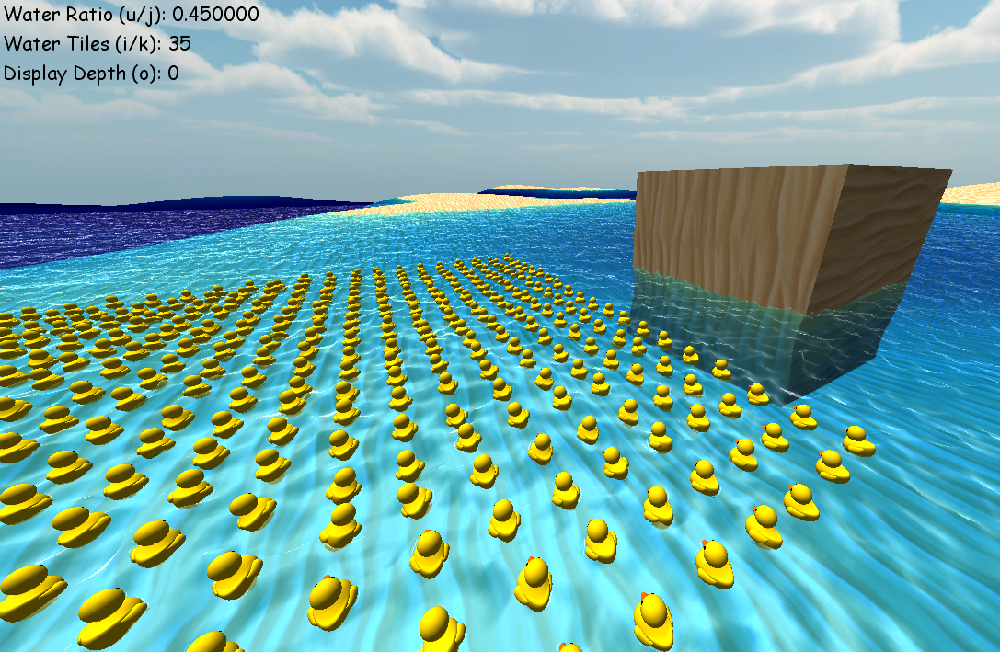

This is a solo passion project I have been working on in DirectX11 since February of 2022. My goal was to simulate and render accurate water in an islandy setting. This was my first project using compute shaders and my first time taking on water simulation, so I naturally ran into many difficulties that I solved on my own. These bugs were often visually absurd-looking, and I had a lot of fun trying to figure them out.
I started this project with the old DirectX11 engine that I used in Banana Boat Bonanza. I had previously made an entity system that uses my own Material, Transform, and Mesh classes to represent objects in the game. My old engine also had the infrastructure for skyboxes and had a first-person flying camera.
The sand was made using Perlin Noise to represent the heights of a plane. The sand is tinted blue when underwater because light with a high wavelength (red side of the rainbow) cannot penetrate through water as easily. To simulate this effect I created a blueshift method in the pixel shader that uses the pixel position, the camera position, and “waveHeight” texture to calculate how far a ray of light would have to travel through the water before it reaches the camera. This distance value is used to remove red, then green, then blue. Distance is put to the power of 0.2 before being used because wavelengths are not blocked in a linear manner.
The water surface is made up of a 256x256 grid of vertices scaled down to fit into a 32x32 meter space. My plan to make a believable water surface was to have many layered gaussian waves stacked on top of each other. These waves are unique because they have a vertical and horizontal component, so the vertices move in a circle rather than up and down. Because of this horizontal component, a few extra steps must be taken when making a height and normal map.
The moving water surface was made using three compute shaders to create a height map and a normal map. The first compute shader made the displacement map that held the gaussian waves with vertical and horizontal components. The RGB components of the texture were used as XYZ coordinates for where that particular vertex should be displaced to.
The second compute shader made the height map for the water. It took in the fully completed displacement map and used it to fill out the height map. The shader took the displacement of the vertex and found how far horizontally it missed the target position. It would take the distance it missed and resample the texture at that "miss vector" negated to land a bit closer to the target position. This process would be repeated 32 times to provide an extremely accurate height for the target position.
The third compute shader was used to make a normal map using the height map. This map was the most straightforward to generate as it would simply look at the surrounding height pixels and use that to calculate a normal for the plane.
Generate Displacement Map
Generate Height Map
Generate Normal Map
Oceans are known for their extreme vastness. To make a detailed ocean that can run at 60 fps, I decided to make the water surface tilable so that the opposite sides align perfectly, and I can make a grid of these tiles. This caused some unique challenges because only some waves will align perfectly. Each wave is generated with a direction and a wave length, so the question was: “What direction-length combinations will align on both sides of the grid?”
My answer to this question was to slice the grid into vertical and horizontal slices. So I would calculate a direction by usign the normalized width slices divided by the height slices. I used the dot product of the normalized direction vector and the closest edge point where the wave shold end to determine the wavelength. This method worked well and made a tilable surface that can easily have more waves added or taken away.
I employed post-processing, and an alpha encoded depth map to create the wiggly distortion of light refraction. The effect was a simple sinewave in the up and down directions to distort pixels that are underwater and leave the dry pixels unaltered. I executed this with a depth map calculated in the Blue Shift method of the pixel shader stored in the alpha float of the texture's RGBA. It only took the distance from an underwater pixel to the camera up to 1000 meters, where 0 is near, and 1 is far.
Pixels above water were set to have an alpha of 1 because they should not have the wiggly effect applied to them, and sky pixels were set to 0.99 so that water pixels could later be added on top of them when viewed from below the water. The wiggly effect would have the amplitude of its distortion scaled-down the further the pixel to a distance of 600 meters, leaving 40% of the alpha float available for padding. I added the functionality to display the image's alpha channel and view the depth map with a toggleable button.
Buoyant entities were a puzzling problem. My first approach was to bring the water height map into the CPU to calculate each buoyant object's normal and rotate its transform, but bringing a texture out of the GPU every frame is horribly unoptimized and slow. To get around this, I calculated and applied the transform changes in the GPU. This worked wonderfully and avoided undergoing the extremely slow process of taking a texture out of the GPU.
I calculated the actual normal by taking sampling four points from the water height map. I used points on each individual object's local X and Z axis to calculate a “correctional rotation matrix” that would orient the local y to point away from the water.
Now this bug was pretty funny but also really bad for realism. The water would sort of flatten out for a second and then spike up to extreme heights in random places in a weird cyclical way that wouldn't spike up the same place twice. What was going on here? The waves were harmonizing!
When two or more waves are going in the same exact direction, they can harmonize in certain spots. This means that their amplitudes add together in places where they collide. In this picture, I was experimenting with axis-aligned waves before I figured out how to make directional waves that are tileable, so there were dozens of waves all going in the same four directions. The resulting harmonics were comically high.
To fix this, I started using a method in the displacement map generator that would check if a wave slice ratio could be simplified. If the ratio could be simplified, another wave with the same direction is already being used. If the method returned true, I would not generate the wave, preventing any unwanted wave harmonization.
The problem with alpha encoding while also using transparency is that they both use the alpha channel. This proved to be really problematic because my depth map gave inaccurate values. At first, I came up with two naive solutions to the problem with their own drawbacks before coming up with the perfect solution with no downsides.
The first solution I came up with was to render the water onto the screen after the postprocessing. The big problem with this is that postprocessing would reset the buffers, and the water would be drawn transparent on top of everything. The water would render even through solid objects in front of the water surface.
The second flawed solution I came up with was to render the transparent entities before postprocessing and simply subtract 0.35 (the alpha of the transparency) from every alpha in the postprocessing. This was flawed because if you were underwater, it would still remove 0.35 and assume that the pixels were much closer than they really were. It made areas without a water surface on top appear much closer, and overlapping water would make the pixels appear much further away. The ugliest side effect was that it would apply the waviness effect to the water’s reflection. This is not super noticeable with low detail water, but it is impossible to miss once you notice it.
The third solution that I settled on was inspired by a video I watched about rendering non-euclidian geometry. I decided to create a screen-sized texture that was full black and render the water onto that texture instead of the screen or the postprocessing texture. I then passed this texture into the postprocessing shader and used it to add water reflections to any underwater pixel. This way, the depth map would remain untampered with, and the water would be appropriately rendered without distortion or through solid ground.